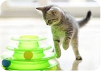
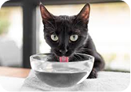
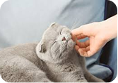
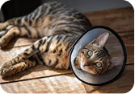
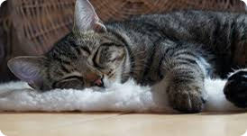
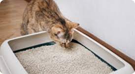
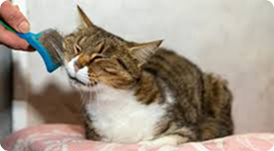
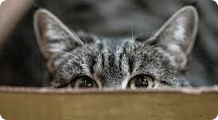

Alimentação
Dieta equilibrada previne doenças e aumenta longevidade.

Brincar
Brinquedos e interação evitam estresse e sedentarismo.

Hidratação
Consumo de água previne problemas renais.
Check-Up
Visitas regulares ao veterinário garantem prevenção.

Ambiente
Espaços tranquilos melhoram o bem-estar do gato.

Castração
O procedimento reduz riscos de doenças e fugas.

Sono é vital para os felinos
- O sono é fundamental para a saúde dos gatos. Durante o descanso, o corpo recupera energia.

Higiene mantém gato saudável
- Manter a caixa de areia limpa é essencial para a saúde dos gatos. Resíduos acumulados podem causar infecções urinárias e digestivas.

Escovação evita bolas de pelo.
- SEscovar os gatos regularmente ajuda a evitar acúmulo de pelos e bolas de pelo no estômago. Esse cuidado simples melhora a digestão e previne vômitos.
